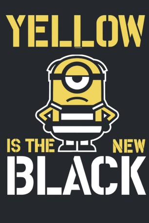

gesehen am 14.04.2019
gesehen am 14.04.2019Alternativ: Yellow is the new black gesehen am 14.04.2019
 
 IMDB-Wertung: 6.0 / 10
IMDB-Wertung: 6.0 / 10  Metascore:
Metascore: 
An adventure about two minions which try to escape from jail.
Jahr: 2018
Dauer: 3 Minuten
FSK:
Land: USA Studio: Universal PicturesTonspuren: DD5.1 - ,
Untertitel: Deutsch, Englisch,
Auflösung: 1080p (1920x804) Größe: 377 MB
Genre: Komödie, Abenteuer, Animation/Trick, Familie, Kurzfilm
Regisseur: Serguei Kouchnerov, Fabien Polack
Drehbuch: Jeff Lowell, Ted Travelstead
Soundtrack: Jake Monaco
Darsteller:
 Pierre Coffin als Minions
Pierre Coffin als Minions Brian T. Delaney als Hal
Brian T. Delaney als Hal Carlos Alazraqui als Guard
Carlos Alazraqui als GuardDatei: X:\Kinder Collections\Ich, einfach unverbesserlich\Minions Auf Der Flucht (2018, FSK, 1920x804).mkv seit 08.04.2019
Festplatte: Kinder-Filme+Trick
 Es gibt insgesamt 13 Filme in der Gruppe 'Kinder Collections\Ich, einfach unverbesserlich'
Es gibt insgesamt 13 Filme in der Gruppe 'Kinder Collections\Ich, einfach unverbesserlich'